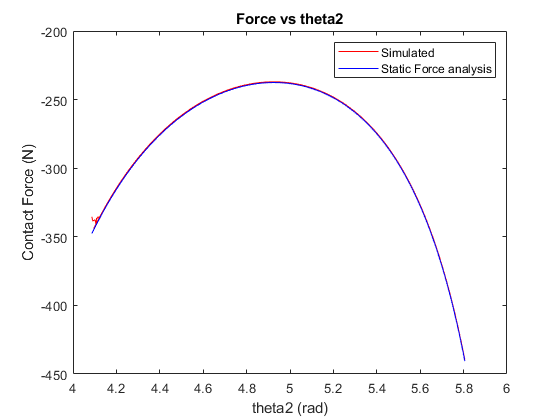

Contents
clc,clear,close all
R = 1.97/2;
L = 4.33;
theta0 = [314.7 331.07 343.55];
theta0 = deg2rad(theta0);
phi = asin((R/L)*sin(theta0));
s = R*cos(theta0) + L*cos(phi);
T12 = 240;
P = T12*(cos(phi))./(R*sin(theta0 + phi))
P =
-294.9633 -419.6317 -706.0648
Problem 2
Extra Credit
clc,clear,close all
dta = load('SliderCrank_ExtraCredit.dta');
t = dta(:,1);
theta2 = dta(:,2) - (2*pi);
force = dta(:,4);
R = 1.97/2;
L = 4.33;
theta0 = theta2(10:end);
phi = asin((R/L)*sin(theta0));
s = R*cos(theta0) + L*cos(phi);
T12 = 240;
P = T12*(cos(phi))./(R*sin(theta0 + phi));
figure(1)
plot(theta2(10:end),force(10:end),'r',theta0,P,'b')
xlabel('theta2 (rad)')
ylabel('Contact Force (N)')
title('Force vs theta2')
legend('Simulated','Static Force analysis')
